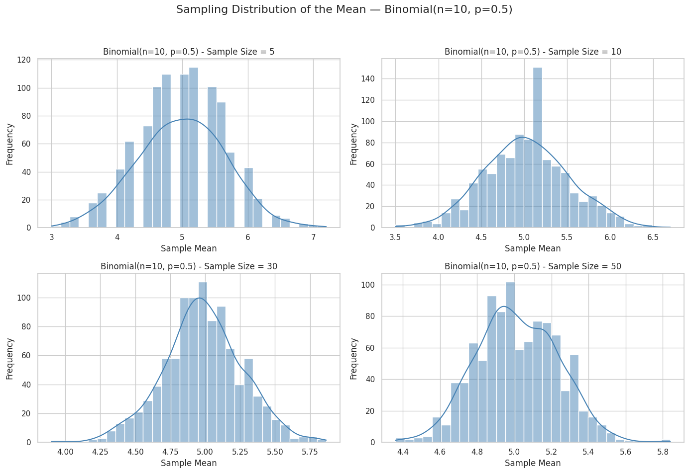

Problem 1
Motivation:
The Central Limit Theorem (CLT) is a fundamental result in statistics that
states the following:
"The sampling distribution of the sample mean will tend to follow a normal distribution as the sample size increases, regardless of the shape of the original population distribution."
This means that even if the underlying population is not normally distributed, if we take sufficiently large random samples and compute the sample mean, the distribution of the sample means will converge to a normal distribution as the sample size increases.
Mathematically, let X₁, X₂, ..., Xₙ be i.i.d. (independent and identically distributed) random variables with a population mean μ and variance σ². Then the sample mean:
X̄ₙ = (1/n) * Σ Xᵢ follows: X̄ₙ ~ N(μ, σ²/n) approximately, as n → ∞
This theorem holds true regardless of the original population distribution (e.g., Uniform, Exponential, Binomial).
By simulating different population distributions and calculating sample means, we can observe the CLT in action.
Population size (large enough to approximate the "true" population) population_size = 100000
Generate different population distributions
uniform_population = np.random.uniform(low=0, high=1, size=population_size) exponential_population = np.random.exponential(scale=1.0, size=population_size) binomial_population = np.random.binomial(n=10, p=0.5, size=population_size)
Sample sizes to test CLT convergence
sample_sizes = [5, 10, 30, 50]
Number of samples to draw for each sample size
n_samples = 1000
Function to compute sample means
def compute_sample_means(population, sample_size, n_samples): """ Draws multiple samples from a population and computes the sample means.
Parameters:
population (array): the full population data
sample_size (int): size of each sample
n_samples (int): number of samples to draw
Returns:
np.array: array of sample means
"""
sample_means = []
for _ in range(n_samples):
sample = np.random.choice(population, size=sample_size, replace=False)
sample_mean = np.mean(sample)
sample_means.append(sample_mean)
return np.array(sample_means)
Dictionary of distributions to analyze
distributions = { "Uniform(0,1)": uniform_population, "Exponential(λ=1)": exponential_population, "Binomial(n=10, p=0.5)": binomial_population }

Visualization of sample mean distributions
for dist_name, population in distributions.items(): plt.figure(figsize=(14, 10))
for i, size in enumerate(sample_sizes):
means = compute_sample_means(population, sample_size=size, n_samples=n_samples)
plt.subplot(2, 2, i + 1)
sns.histplot(means, kde=True, bins=30, color='steelblue')
plt.title(f'{dist_name} - Sample Size = {size}')
plt.xlabel('Sample Mean')
plt.ylabel('Frequency')
# Empirical mean and variance of the sampling distribution
empirical_mean = np.mean(means)
empirical_std = np.std(means)
# True population parameters
pop_mean = np.mean(population)
pop_var = np.var(population)
# Theoretical standard deviation of the sample mean
# σ/√n
theoretical_std = np.sqrt(pop_var / size)
print(f"Distribution: {dist_name} | Sample Size: {size}")
print(f" Population Mean (μ): {pop_mean:.4f}")
print(f" Population Variance (σ²): {pop_var:.4f}")
print(f" Empirical Mean of X̄: {empirical_mean:.4f}")
print(f" Empirical Std of X̄: {empirical_std:.4f}")
print(f" Theoretical Std of X̄: {theoretical_std:.4f}")
print("-" * 60)
plt.suptitle(f'Sampling Distribution of the Mean — {dist_name}', fontsize=16)
plt.tight_layout(rect=[0, 0.03, 1, 0.95])
plt.show()
CLT Summary:
Regardless of the original population distribution (uniform, skewed, discrete), as the sample size increases, the distribution of the sample mean approaches
a normal distribution:
X̄ₙ ≈ N(μ, σ²/n)
Key observations from simulation:
- With small sample sizes (e.g., n=5), the shape of the population is still visible.
- At n=30 or greater, all distributions begin to look approximately normal.
- The variance of the sample mean decreases as sample size increases.